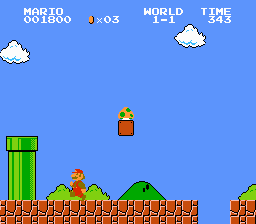
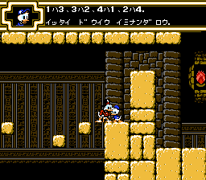
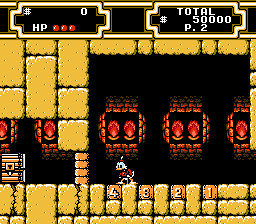
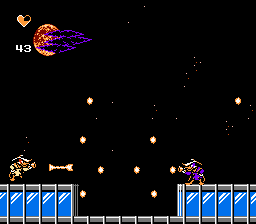
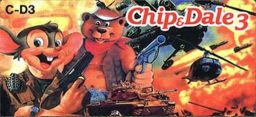
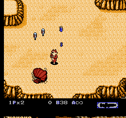
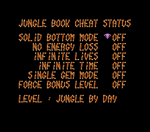
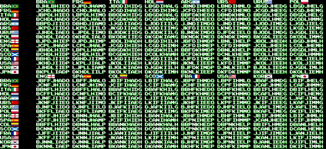
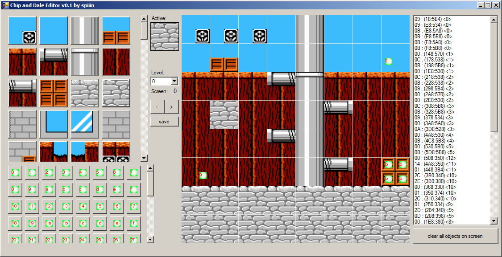
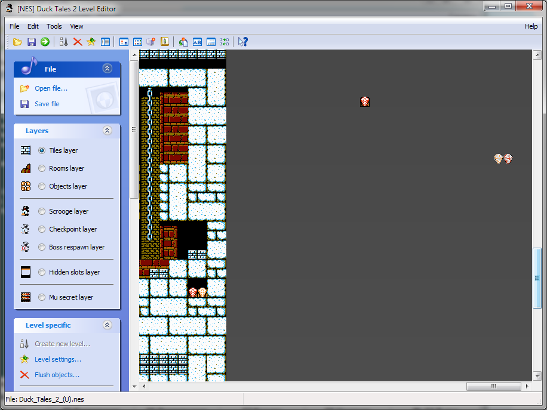

Предыстория
У детей 90х была приставка Dendy. И у них были игры для неё. Игры были новым миром для этих детей. Можно было обсуждать этот мир с друзьями из соседнего двора, и делиться открытиями, сделанными в нём. Те, у кого были картриджи с одинаковыми играми, могли пользоваться открытиями друг друга. Первый, кто узнавал, как победить босса, и добраться до следующего уровня, приравнивался к первооткрывателю - его ждала слава среди других исследователей. Но ещё сильнее будоражило умы детей открытие какого-либо игрового секрета. Игры же были просто переполнены секретами, каждый из которых мог значительно упростить игровую жизнь, и за это знание секретов очень ценилось. Игрок, который знал об игре больше, получал значительное преимущество. Зачем пытаться прорваться напролом через сильных врагов, если можно вместо этого обойти их, и сократить путь, ещё и получив при этом деньги и дополнительную жизнь?
Секретами могло быть что угодно. Это могло быть особое место - скрытая дверь, которая вела в обход врагов и ловушек, невидимый проход или сундук с сокровищами. Многие впервые находили в первом уровне Супер Марио трубу в начале уровня, в которую можно было залезть и вылезти почти в конце уровня, и скрытый ящик с жизнью, который нужно было открыть вслепую.
Это могла быть особая комбинация клавиш, благодаря которой герой мог делать особые движения. Это особенно ценилось в файтингах, когда новая комбинация клавиш позволяла бить соперника особо изощрённым способом.
Это мог быть пароль, который позволял начать игру не с первого уровня, а продолжить с уже имеющегося.
Наконец, иногда помочь в прохождении игры могла просто подсказка, перевод игры на родной язык, так как многие игры приходилось проходить на английском или японском. Мало кто из игроков смог бы сам разгадать шифр из японской версии Утиных Историй 2 (а все играли именно в неё), который нужен был для получения карты клада в уровне Египет. Хотя этот шифр просто выдавался в качестве подсказки от племянников Скруджа.
 Игроки приучались искать секреты, уважать других искателей и носителей знания, на основе этого формировалось сообщество геймеров. Почти у каждого игрока была своя тайная тетрадка с найденными секретами, в которой рисовались схемы уровней, переписывать способы осуществления особых ударов, сохранялись выданные играми пароли. Секреты иногда публиковались в газетах, или же выпускались в специальных сборниках, и заполучить такой сборник было мечтой каждого игрока.
Но иногда даже в таких сборниках публиковалась неверная информация. Редакторы выдумывали секреты для малоизвестных игр ради увеличения количества страниц в сборнике. Игроки, общаясь друг с другом, тоже иногда выдумывали несуществующие секреты и искажали информацию, которая передавалась между дворами и превращалась в городские легенды. Например, в мультфильмах про Чёрного Плаща главным злодеем был Антиплащ, и многие геймеры готовы были легко поверить в то, что в конце игры их ожидала встреча с Антиплащом, и с раскрытыми ртами слушали выдуманные рассказы о битве с ним.
Среди англоязычных геймеров тоже ходили такие легенды. Одной из самых известных была легенда об Эрмаке. В первом сеговском Мортал Комбате из-за игровой ошибки Скорпион иногда перекрашивался в красный цвет, при этом игра выводила в качестве имени текста Error Macro (ошибка макроса).
Дальше кто-то прозвал нового красного ниндзя Ermac. Англоязычным геймерам в плане среды распространения информации повезло больше, чем пост-советским - информация о новом ниндзя попала в игровые журналы, а затем и к разработчиками. В итоге они создали такого персонажа в новой части игры, с перевыпусками превратив его в полностью уникального бойца!
Русскоязычные геймеры не могли даже мечтать, чтобы придуманные ими сюжеты реализовывались в играх. Увидеть на картриджах Чебурашку, Винни-пуха, Карлсона и других героев детских сказок не удалось, однако объединяющими игроков персонажами становились герои мультфильмов, которые существовали одновременно в транслируемых по телевидению мультфильмах и играх - Чёрный Плащ, Чип и Дейл, Скрудж, Черепашки Ниндзя. В отличие от американских культовых персонажей - Мегамэна, Саймона из Castlevania и Линка из Zelda, главными героями в разумах пост-советских геймеров становились те, про кого было больше всего информации, хотя Марио удалось сделать это и без всякой помощи (отчасти из-за его присутствия на картридже 9999-1, идущем в комплекте с приставкой, а у кого-то - и единственным из-за дорогивизны картриджей).
Большая часть картриджей на рынке была китайского производства, из-за чего геймерам попадались первые взломанные игры. Попадались игры с увеличенным количеством жизней или возможностью старта с любого уровня, иногда при взломе были допущены ошибки, усложняющие игру, или делающие её непроходимой совсем, как в Черепахах Ниндзя 3. Также китайские пираты делали страшные вещи вроде перерисовывания голов персонажам ради переименовывания игры, из-за чего игроки, которые приносили домой заветные картриджи с культовыми названиями Darkwing Duck 2 или Chip & Dale 3, обнаруживали, что это не те игры, которых они ожидали.

Эмуляторы
Дети выросли, но их мечты остались. Компьютеры стали быстрее, и их скорости стало хватать для того, чтобы притвориться старой приставкой и проиграть специальный файл-образ картриджа так, как будто это настоящие консоль и картридж. Большую роль в этом сыграли хакеры-радиолюбители, которые создали программы-эмуляторы и сдампили большинство картриджей в базу файлов-образов. Любой образ стало возможным скачать через интернет. Те счастливчики, у которых был быстрый компьютер и модем, могли пользоваться этими файлами, чтобы переиграть в любимые с детства игры, а также добраться до тех игр, которые на картриджах никогда не доходили до пост-советского пространства.
Теперь, кроме возможности управлять игрой, нажимая на кнопки джойстика, появилась ещё одна - можно было модифицировать файл, в котором хранится копия всей памяти картриджа, и этим изменять происходящие в игре события!
Я уверен, что одним из первых взломов игры была модификация количества жизней. Игрок, который не мог пройти трудную игру, мог сделать себя бессмертным и дойти до конца. Это было интересно только один раз, дальше возникал вопрос - а что ещё можно изменить в игре? Многим хотелось пройти игру на родном языке и дать возможность пройти её другим. Для перевода игры требовался как человек, знающий иностранный язык, так и хакер, модифицирующий процедуры вывода текста, поэтому хакеры стали объединяться в группы, для создания переводов игр.

В ходе изучения образов игр обнаружилось, что внутри них хранится множество таких секретов, которые невозможно обнаружить другим способом. Например, разработчики часто оставляют в играх вырезанные перед официальным релизом уровни, персонажей. Огромная база вырезанных, но оставленных внутри игр данных собрана тут. Там можно узнать, к примеру, что финальная мелодия в Чёрном Плаще играет только наполовину, вторую половину можно услышать только выковыряв музыку из ROM-файла.
Другой пример данных, которые не должны быть видны обычному пользователю, китайский картридж-многоигровка, в котором спрятаны меню из других многоигровок
Кроме вырезанных данных разработчики часто оставляют функции, которые использовались при тестировании игры, совершенно фантастические с точки зрения обычного игрока, такие как свободное перемещение на любой уровень, бессмертие, уничтожение боссов с одного удара и другие. В отличие от вырезанных данных, эти функции часто можно включить, набрав какой-то сложный код, который невозможно угадать случайно, на джойстике, и если узнать этот код, то можно будет воспользоваться им и на настоящей приставке с картриджем. Вот база таких кодов, собранная одним ромхакером. Например, в игре Книга Джунглей, если зайти в меню Sount Test и последовательно прослушать мелодии под номерами 40, 30, 20, 19, 18, 17, 16, 15, то откроется отладочное меню с выбором уровня и возможностью включить бессмертие.
Отдельная категория таких функций – "пасхальные яйца", секретные послания разработчиков. Их также можно вызвать с помощью ещё более сложных кодов, но они никак не связаны с игровым процессом. Иногда, в погоне за игровыми секретами, хакер натывается на чьи-то старые признания в любви. Представьте, десятки тысяч картриджей, и на каждом есть код, который при наборе секретной комбинации кнопок, выведет строку текста с признанием в любви.
Часть из таких секретов можно обнаружить просто просматривая файл с дампом игры - в нём достаточно просто обнаруживаются строки текста. Для других необходимо анализировать код игры. Например, игры, которые используют систему паролей, используют алгоритмы генерации паролей. Если изучить алгоритм, который генерирует игра, то можно построить свой генератор паролей. При этом оказывается, что некоторые игры могут выдать только ограниченное множество из всех допустимых паролей, то есть можно составить такой пароль, который игра никогда не покажет игроку в ходе прохождения, но который примет при вводе. Например, для игры Tecmo World Cup можно ввести пароль на такой матч, в котором сразятся две одинаковые команды, чего невозможно сделать другим способом.
Для генерации паролей чаще всего бывает достаточно только изучить код, но существуют и такие секреты, для понимания и раскрытия которых бывает необходимо писать целую программу или добавлять в эмулятор новые возможности. Одними из первых категорий хакеров, развивающих данное направление, стали тас-игроки (от англ. tool assisted superplay - суперигра с использованием программ). Их первоначальной идеей было добиться минимально возможного по времени прохождения игры, не изменяя её, а только изучая. То есть записанное прохождение должно проигрываться на реальной приставке (при предположении, что игрок сможет нажимать на клавиши 25 раз в секунду). Для того, чтобы добиться такого результата, исследователь изучает код игры (чаще всего изучение касается физики столкновений) и использует возможности эмулятора по замедлению и сохранению игры. Удивительно, но и при этом в играх обнаружилось много секретов. Оказалось, что с помощью очень быстрого ввода комбинаций клавиш можно добиться прохождения сквозь стены, неуязвимости от атак врагов и даже изменения оперативной памяти консоли.
Хотя тас-игроки не ставят целью хакинг игры, они разработали полезные для исследования и взлома инструменты. Например, для просмотра оперативной памяти используются скрипты на языке lua, которые позволяют видеть важные в текущий момент значения прямо на экране с игрой, и модифицировать их. Отдельные скрипты могут даже добавлять в игру новые возможности:
Однако, пока ещё скриптовый язык используется лишь как вспомогательное средство, а не основной инструмент исследователя.
Для достаточно хорошо изученных хакерами игр рано или поздно создаются специальные инструменты, вроде редакторов уровней и игровых анимаций, которые позволяют модифицировать и изучать игру ещё дальше.  В редакторе можно обнаружить скрытые предметы, например, во второй части Чипа и Дейла есть скрытый прямо в пустоте красный шарик из первой части игры:
В утиных историях 2 некоторые алмазы расположены за пределами игрового уровня: 
С помощью таких инструментов у выросших детей 90х появилась возможность вернуться в детство и создать свои собственные версии игр взамен тех китайских подделок, которые когда-то подсунули им. Новый Darkwing Duck:
Новый Чип и Дейл:
Чаще всего создание качественных инструментов для какой-либо игры - это один из последних этапов поиска секретов в ней, на котором известен практически каждый байт. На этом этапе хакер может сделать с игрой практически всё, даже такие кажущиеся невозможными вещи, как добавление второго игрока в игру, в которой это не предусмотрено:
Однако на таком уровне исследовано совсем немного игр. Возможно, ваша любимая игра до сих пор дожидается своего исследования и ждёт того, чтобы раскрыть свои секреты именно вам. Присоединяйтесь, это очень увлекательно!